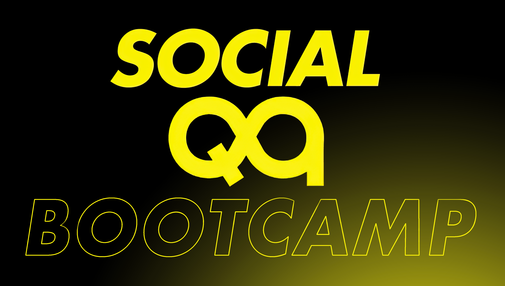
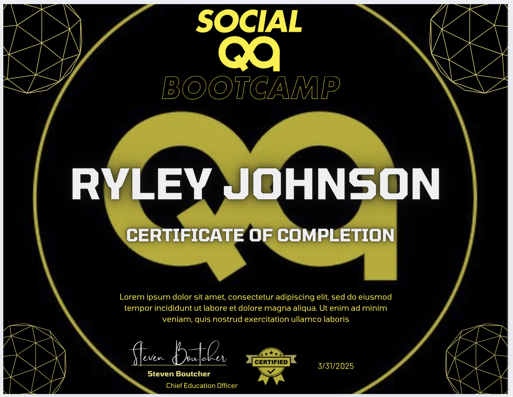
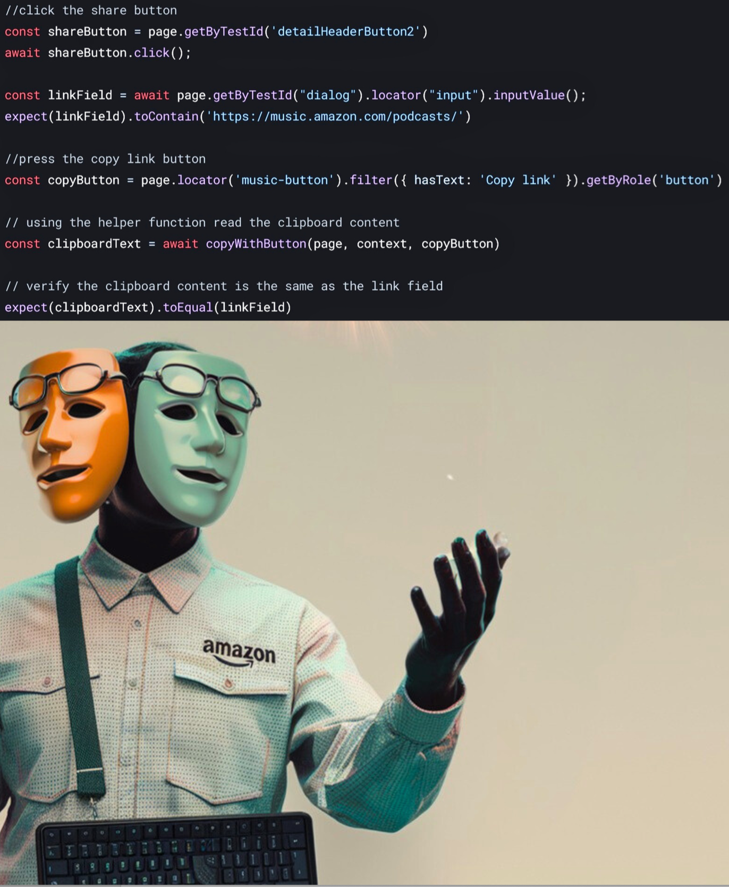
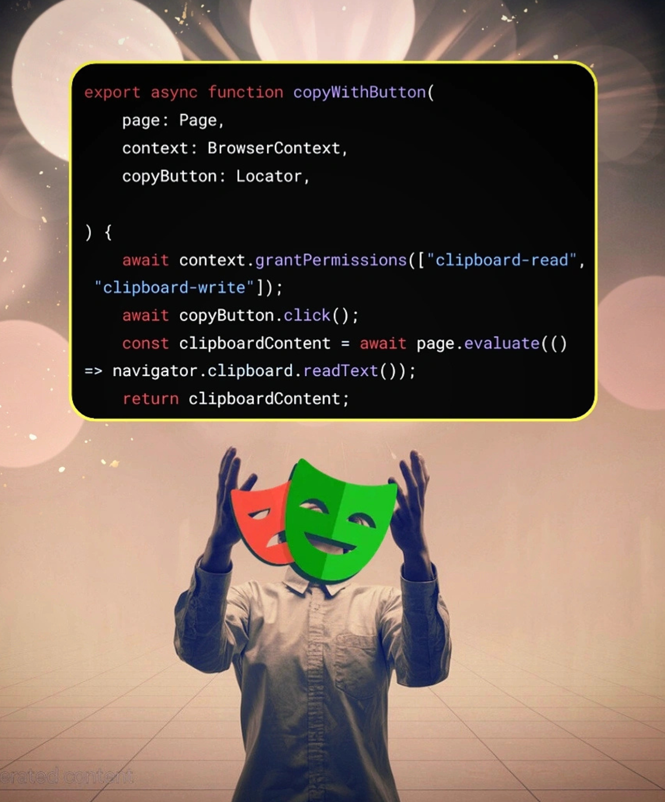

Designs in use

Variant 1

Variant 2
Typography & Infinity branding
Created for The Social QA—a QA bootcamp that helps people level up from tutorial hell to real-world skills. The client already had an “Infinity QA” logo but needed typography that complemented it, along with some overall refinement.
→ Read about the bootcamp on HashnodeI enhanced the original design, scaled it for higher resolution, and created matching typographic elements. I provided multiple high-resolution variants, a custom banner, and a transparent PNG to ensure seamless branding across the client’s various platforms.

Variant 1
Variant 2
I was also a student of this course, bettering my QA automation knowledge. Because my logo designs were liked so much, I was asked to create the completion certificate templates used for graduates. Here’s the result.

Completion certificate template
Part of the course was learning content writing for social media engagement. On my own, I decided to leverage Gen AI to create high-quality images to go along with some of my posts. Using various tools—Canva, Midjourney, Stable Diffusion, and others—I created visuals that complemented my content and boosted engagement.


I wrote about going from tutorial hell to 10K+ LinkedIn views—and how The Social QA bootcamp helped get me there. If you’re curious about the course from a student (and designer) perspective, give it a read.
Read the post on Notion →